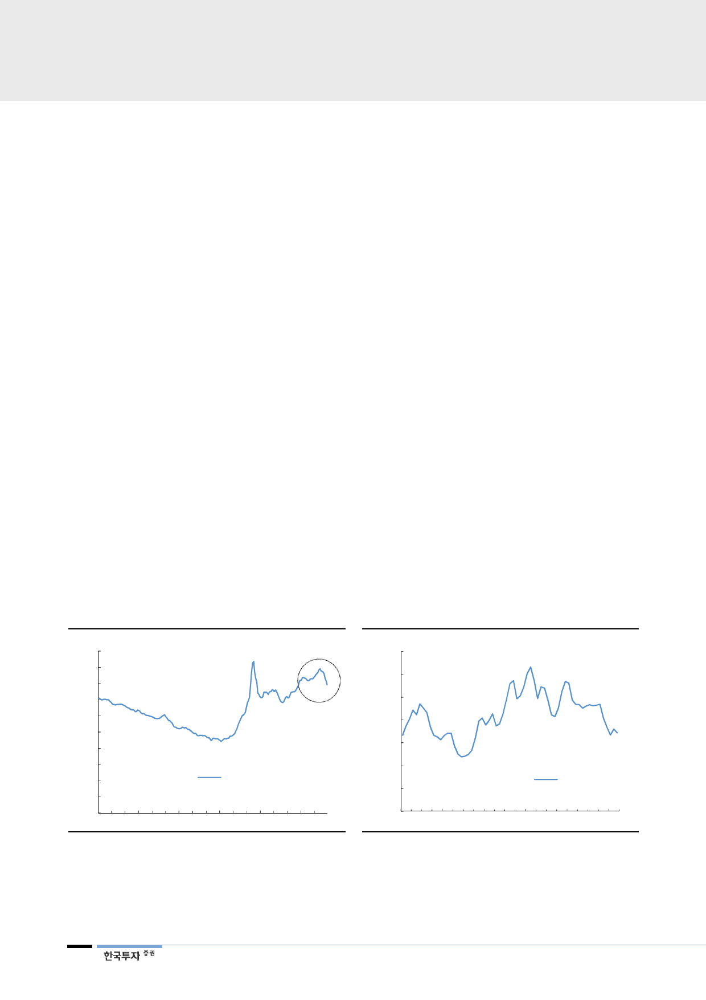

한국전력(015760)
IV. 실적전망 및 시나리오 분석
18년 감익 불가피
1. 18년 감익 불가피, 하반기로 갈수록 좋아진다
한전의 18년 영업이익은 4.4조원으로 전년대비 10.7% 감소할 전망이다. 올해
원전이용률이 71.8%로 전년대비 2.6%p 낮아져, 민간에서 구입할 전력량이
5.4% 늘어날 것이기 때문이다. 또한 SMP도 전년대비 4.6% 높아져 구입전력비
중가(+8.6%)는 불가피하다. 또한 탄가(12.7만원/톤, +4.3% YoY)도 상승해 연
료비 증가(+2.9%)에 끼치는 영향도 클 것이다.
1분기가 실적 바닥
다만 지난 4분기 적자로
기대는 없어
1분기 영업이익은 전년대비 83.3% 감소한 2,441억원으로 전망한다. 작년 4분기
부터 이어진 한파로 전력수요는 크게 늘어난 반면, 1분기 원전 이용률은 55.2%
로 전년대비 12.2%p 낮아져 한전의 발전믹스가 악화됐기 때문이다. 이에 구입전
력비는 36.0% 늘어날 것이다. 또한 탄가 상승으로 연료비도 8.0% 증가해 1분기
실적으로는 2012년 이후 가장 저조할 전망이다. 다만 지난 4분기 적자로 한전의
1분기 실적에 대한 큰 기대는 없는 상황이다.
하반기는 증익 예상
원전이용률, 탄가, 환율
모두 긍정적
다만 1분기를 바닥으로 점차 감익폭은 줄어들 것이며 하반기에는 증익이 예상된
다. 원전 이용률 회복, 긍정적인 원/달러 환율, 안정화되는 유연탄 가격 등 하반기
로 갈수록 우호적인 상황이 펼쳐질 것이다. 특히 유연탄은 작년 여름 중국 폭염에
따른 전력수요 증가와 호주와 인도네시아의 공급차질로 가격이 크게 상승한 바
있다. 그러나 3월 들어 약 8개월간의 상승세를 멈추고 하락 전환했다. 또한 장기
적으로는 중국의 석탄발전 비중축소 정책 강화로 유연탄 수요는 점차 둔화될 것
으로 보여 탄가는 하향 안정화될 전망이다.
[그림 30] 석탄가격 하락 시작
(달러/톤)
100
90
80
70
60
50
40
30
20
10
0
Jan-14 Oct-14
Jul-15
유연탄 가격(인도네시아)
Apr-16 Jan-17 Oct-17
주: FOB Kalimantan 5,900kcal/kg 기준
자료: 한국투자증권
[그림 31] 원/달러 환율 추이
(원/달러)
1,250
1,200
1,150
1,100
1,050
1,000
950
원달러 환율
900
Jan-13 Jan-14 Jan-15 Jan-16 Jan-17 Jan-18
자료: 한국수력원자력, 한국투자증권
12